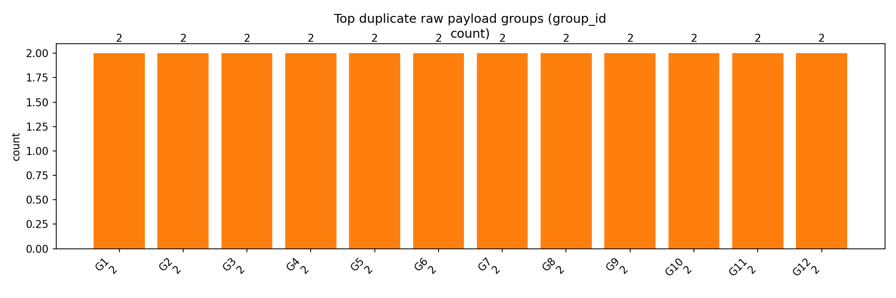

This page shows concrete proof that identical spike payloads were recorded multiple times in the provided export. Files generated by the analysis scripts are linked below.
The chart below shows the count of occurrences for the top repeated raw payload groups.
Below are the exact raw arrays and timestamps for the top 5 duplicate groups (copied from the generated proof file).
Duplicate payload proof report Source: C:\Users\sandr\Downloads\spike_events_NA_NA_2025-11-05T14-13-01.json Total spikes: 76 Duplicate groups (count > 1): 38 === Group 1: occurrences=2 === Example times: 46566.80000000005, 46567.10000000009 sampleCount=8, maxMag=2044 raw1s: [2864, 3888, 1768, 1608, 2076, 4092, 2092, 2988] raw2s: [2036, 2012, 2040, 2188, 2072, 1984, 2108, 2008] === Group 2: occurrences=2 === Example times: 47336.60000000009, 47336.89999999991 sampleCount=8, maxMag=2044 raw1s: [1980, 1960, 2020, 2044, 2016, 2056, 4092, 1848] raw2s: [2036, 2048, 2040, 2048, 2332, 2260, 2108, 1960] === Group 3: occurrences=2 === Example times: 47648.80000000005, 47649.10000000009 sampleCount=8, maxMag=2044 raw1s: [1972, 2700, 2016, 4092, 2372, 1140, 1284, 1452] raw2s: [2052, 1896, 1880, 1856, 1900, 1944, 1936, 1956] === Group 4: occurrences=2 === Example times: 56974, 56974.30000000005 sampleCount=8, maxMag=1288 raw1s: [2448, 2432, 2252, 2168, 2100, 2040, 2040, 2060] raw2s: [3336, 3268, 2904, 2800, 2704, 2548, 2476, 2424] === Group 5: occurrences=2 === Example times: 61079.80000000005, 61080 sampleCount=8, maxMag=1000 raw1s: [1564, 1616, 1672, 1744, 1844, 1988, 2188, 2596] raw2s: [1316, 1384, 1480, 1600, 1776, 2068, 2472, 3048]
If you want this page integrated into the Next app as a route or want interactive inspection (hover/click to expand groups), I can implement that next.
{kind=link}